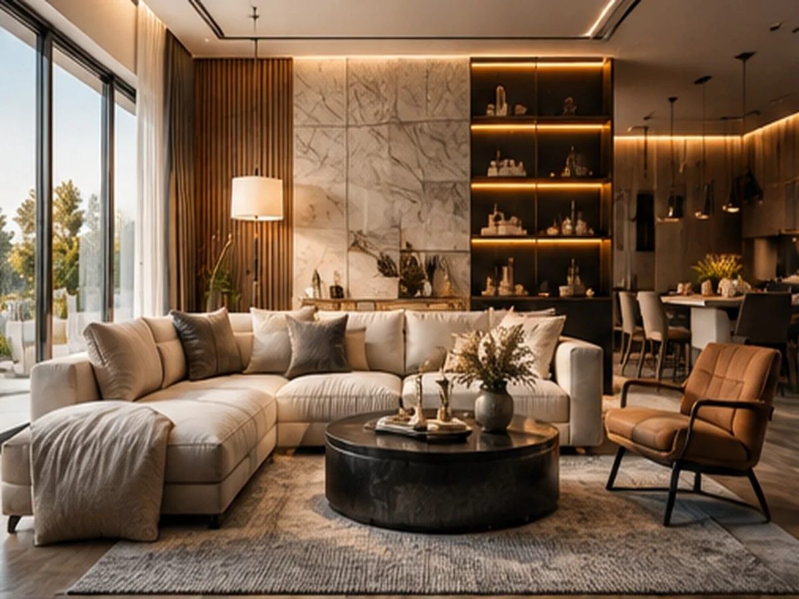

Spaces with a sense of place.
We shape residential and hospitality interiors through proportion, material, light and the quiet details that make a room feel inevitable.

Selected spaces
Each project begins with the character of a place, then builds a language around how people actually live, gather and move.
Texture is part of the architecture.
Stone, timber, metal and textile are selected as a composition—not a shopping list.
From first sketch to final object.
Discover
We understand the property, brief, routines and ambitions before drawing a line.
Concept
Spatial planning, palette, material direction and the central idea are resolved together.
Develop
Detailed drawings, bespoke joinery, lighting and specifications bring the concept into focus.
Deliver
We coordinate the build and details through installation, styling and handover.
Calm, precise, deeply personal.
Atelier is an independent design practice working across private residences, boutique hospitality and considered commercial environments.
We believe good interiors are not decorated—they are edited. The result is a space with fewer distractions, better proportions and details that reveal themselves over time.
Meet the studio